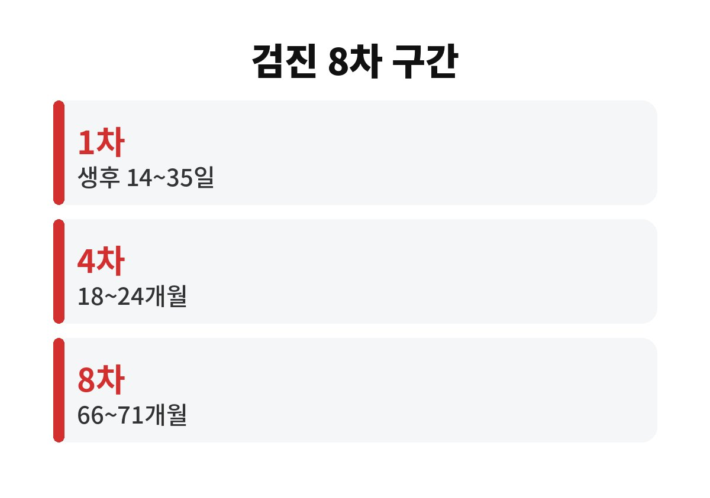
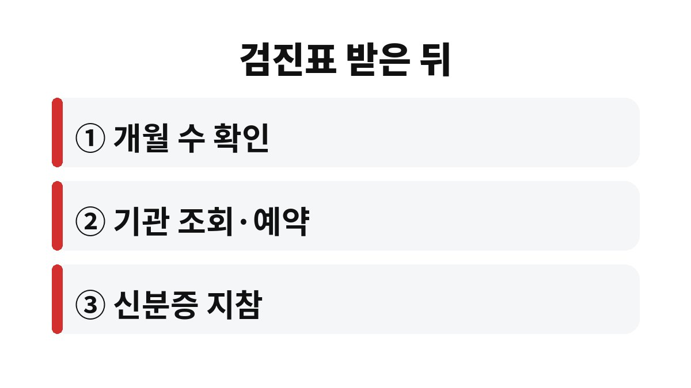

영유아 건강검진은 생후 14~35일의 1차부터 생후 66~71개월의 8차까지 총 8번이며, 차수마다 받을 수 있는 월령 구간이 따로 정해져 있다.
건강보험 가입자라면 본인 부담이 없고, 국민건강보험공단이 보낸 검진표와 보호자 신분증을 가지고 검진기관에 가면 된다.
2026년 11월 기준으로 공공기관 안내 자료에서 확인한 차수별 시기와 검진표를 받은 뒤 할 일을 적었다.
검진 대상은 만 6세 미만 영유아다.
차수는 아이의 생일이 아니라 태어난 뒤 몇 개월이 지났는가로 나뉜다.
돌 무렵의 아이라면 9~12개월 구간인 3차가 열려 있는 시기다.
| 차수 | 시기 | 함께 보는 것 |
|---|---|---|
| 1차 | 생후 14~35일 | 초기 검진, 문진·진찰·신체계측 |
| 2차 | 생후 4~6개월 | 신체계측, 영양·수면 상담 |
| 3차 | 생후 9~12개월 | 발달평가 시작 |
| 4차 | 생후 18~24개월 | 발달평가, 구강검진 |
| 5차 | 생후 30~36개월 | 체질량지수(BMI) 추가 |
| 6차 | 생후 42~48개월 | 구강검진 |
| 7차 | 생후 54~60개월 | 구강검진 |
| 8차 | 생후 66~71개월 | 취학 전 준비 상담 |
표의 오른쪽 칸은 동대문구 보건소가 올린 차수별 표를 줄여 옮긴 것이다.
문진·진찰과 신체계측(키, 몸무게, 머리둘레)은 1차부터 8차까지 모두 들어 있다.
발달평가와 상담은 3차부터, 체질량지수는 5차부터 붙는다.
예를 들어 31개월 아이의 검진표에 5차가 적혀 있다면 30~36개월 구간 안이니 36개월이 되기 전까지 다녀오면 된다.

1차 구간은 생후 14일에서 35일, 겨우 3주 남짓이다.
산후 회복과 신생아 돌봄이 한꺼번에 몰리는 시기라 날짜를 잊기 쉽다는 점이 내 판단으로는 가장 큰 변수다.
출생신고 전에도 대상자 사전 등록 뒤 검진이 가능하다는 안내가 있었으나, 이는 2021년에 나온 자료라 현재 방식은 공단에 한 번 더 묻는 편이 확실하다.
2차부터는 구간이 2~6개월로 넓어져 한결 여유가 생긴다.
다만 구간의 끝에 몰아서 예약하면 원하는 날 병원 자리가 없을 수 있다.

구강검진이 포함된 차수는 4차, 6차, 7차다.
월령 구간은 자료마다 조금 달랐다.
한 보건소 표에는 4차가 18~24개월로, 복지로 안내에는 18~29개월로 적혀 있었다.
검진기관에서 아이에게 적용되는 구간을 확인하고 가는 쪽이 헛걸음을 줄인다.
안전사고 예방과 영양 상담은 여러 차수에 들어 있다.
돌연사증후군 안내는 1차와 2차에, 정서와 사회성 상담은 3차와 5차에 있다.
취학 전 준비 상담은 5차와 8차에서 다룬다.
검진 날 물어볼 것이 정해져 있으면 진료 시간이 짧아도 아쉬움이 덜하다.
발달평가와 상담은 3차부터 8차까지 이어진다.
전자미디어 노출 상담은 2·4·7차에, 대소변 가리기 상담은 4·5차에 들어 있다.
결과가 걱정되는 말이 나오더라도 그 자리에서 단정하지 말고 소아청소년과 의사의 설명을 끝까지 듣는다.
확인한 자료에는 검진 구간을 놓쳤을 때의 대체 기간이 나와 있지 않았다.
구간이 지났다면 추측하지 말고 공단 1577-1000에 아이의 생년월일을 알려 주고 가능한 방법을 묻는 것이 가장 빠르다.
다음에 할 일은 아이의 현재 개월 수가 몇 차 구간인지 달력에 적어 두는 것 하나다.
참고 자료: 동대문구 보건소 「영유아 건강검진 사업」(2026년 11월 확인) · 복지로 「영유아 초기 건강검진 안내」(2026년 11월 확인)
※ 2026년 기준 공식 자료를 바탕으로 정리한 일반 정보이며, 아이의 발달이나 건강에 걱정이 있다면 소아청소년과 등 전문가와 상담하길 바란다.